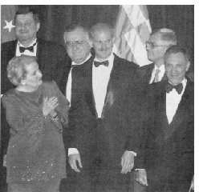
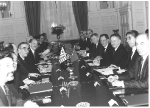

a) ‘Ege’ ve Batı Trakya Türk Azınlığı
Yunanistan’la gelişen ilişkiler, elbette sorunsuz değildi. Ortak konularımızı her zaman ‘ikili ilişkiler’ olarak sınırladığımızdan, ‘öncelikle Kıbrıs’taki Türk ve Yunan milletlerinin sorunu’ olarak nitelediğim Kıbrıs, resmi gündemimizde yer almıyordu. Sohbet ortamında buna değinildiğinde ise, daha çok ben konuşurdum ve Denktaş’ın konfederasyon modelinin erdemlerini anlatırdım. Ciddi olarak sadece bir kez talebim oldu: Denktaş’ın önerdiği ikili görüşmelere yanaşmayan Kıbrıs Rum Lideri Klerides üzerindeki etkisini kullanmasını ve önerinin kabulü yolunda katkısını Papandreu’dan rica etmiştim; bu isteğimi yerine getirdi. Ama sorun sadece Kıbrıs değildi. Ege, başlı başına bir sorundu. Bir yandan, benim ısrarla –ve haklı olarak– belirttiğim bir doğruya, Yunanistan yaklaşmaktaydı: Yunan propagandası, bütün dünyaya ve bize adeta inandırtarak, Ege sorunlarına tek hukuki çözüm yolunun ‘Uluslararası Adalet Divanı’ olduğunu yıllardır tekrarlamıştı. Bu yanılgıdan olayı büyük ölçüde kurtardık. Uluslararası hukukun, bm ve ab belgelerinin, ‘... önce diyalog, arabuluculuk, hakemlik, olmazsa, Adalet Divanı’ gerçeğini, herkese anlatabildik. Dolayısıyla, Yunanistan, eğer çözüm istemekteyse, işe ‘diyalogla başlamak’ durumundaydı. Israrımız sonuç verdi: Özel bir çalışma grubu Türk ve Yunan yetkililerden oluşturuldu ve ortak çalışmalar başlatıldı.
Yunanistan, önceki dönemlerde kendi halkının adeta beynini yıkarcasına ‘Ege anlaşmazlığı bir egemenlik sorunudur, dolayısıyla Türkiye ile konuşmayız’ mugalatasını yaptığı için, Yunan tarafı bu Ege görüşmelerine ihtiyatlı yaklaşmaktaydı. Nitekim, çalışmalar başlangıçta kamuoyuna açıklanmamıştı. Ne var ki, barışçı niyetlerle görüşme ortamı geliştirilirken, Ege üzerindeki tartışmalı uçuşlar, iki ülkenin birbirine verdiği notalar, nato toplantılarındaki karşıtlıklar sürmekteydi. nato tatbikatları bir başka sorundu. Tatbikat haritalarındaki sınırlar, tatbikat bölgesindeki ada ve adacıkların isimleri, her zaman tartışmaya yol açmaktaydı.
Yunanistan’la aramızdaki başlıca bir sorun, kuşkusuz, Batı Trakya’da yaşayan Türkler olmuştur. Papandreu’yla çalışmalarımızda, eğitim, mülk edinme, özgürlükler gibi konularda, sınırlı bir gelişme sağlayabildik, ancak, gönlümce başarılı olduğumuzu söyleyemem. Bazen, Papandreu’nun iyi niyetinin de yetersiz kaldığını, bazı ‘devlet güçlerinin’ gelişmeyi engellediğini, en azından zorlaştırdığını düşünmüşümdür. Sağladığımız gelişmede, kuşkusuz Avrupa Birliği’nin payı vardı. ab’nin hayli ileri olan azınlık hakları anlayışından, Batı Trakya Türkleri yararlanmayı biliyordu. ab’nin azınlık hakları siyaseti zaman içinde daha da netleşti. Bu gelişmelere Türk-Yunan ilişkilerinin düzelmesi de eklenince, Batı Trakya’da belli bir iyileşme 1999-2002 döneminde gerçekleşti.
Gerçekleşemeyen, inanç özgürlükleri alanındaki beklentiler oldu. Yunanistan’a her gidişimde, İskeçe Müftüsü Mehmet Emin Aga ile ve Türk toplumunun siyasal ve dinî önderleriyle görüşmeye önem verirdim. Yakınlaşmanın başlamasından sonra, siyaset düzeyinde şikâyetlere rastlamıyorduk. İnancın örgütlenmesi ise farklıydı. Mehmet Emin Aga’yı, önceki yıllarda, Strasbourg’daki Avrupa Konseyi’nin toplantılarında tanımıştım. Batı Trakya Türk azınlığının temsilcisi olarak, genel kurul toplantılarına gözlemci sıfatıyla katılan heyete başkanlık ederdi. Heybetli görünümü, cüppesi, başındaki sarığı ile herkesin dikkatini çekerdi. Son derece ince ruhlu, duygu yüklü, fevkâlade nazik bir insandı. Ve yılmaz bir savaşçıydı: Batı Trakya Müslümanlarının müftüsü olarak cemaat tarafından tanındığı ve kendini bu sıfatla tanıttığı için, başına gelmeyen kalmamıştı. Açılmış davaların sanığı olarak Yunanistan’ın bir köşesinden, ötekine, mahkemelere koşmuştu. Kısa süreli hapislere defalarca mahkûm edilmiş, ama iddiasını, konumunu ve duruşunu kaybetmemişti. Meselenin özü, Müslüman cemaatin müftüsünü seçmekte kimin yetkili olacağıydı. Türkler, ‘... müftümüzü biz seçeriz’ diyerek, Mehmet Emin Aga’yı seçmekteydi. Yunan devleti ise, kendi yasalarına göre, Müslümanların müftüsünü cemaat içinden kendileri belirlemekteydi. Böylece, ortaya biri devletin atadığı, öteki cemaatin seçtiği iki müftü çıkmaktaydı. Bu durumun yarattığı gerilimden, Yunan hükümeti de pek hoşnut değildi ama, ne yapacağını bilemiyordu. Batı Trakya Müslümanlarının kendi dinî liderini seçmesi, hükümete ters geliyordu. Bunun, Türk azınlığı aşırı güçlendirmesinden çekiniyorlardı. Bu açıkça söylenmiyordu da, ‘... doğrudan seçim yönteminin, din kurumunu siyasallaştıracağı, radikal akımların müftülüğü ele geçireceği’ öne sürülmekteydi. Özellikle Suudi Arabistan çıkışlı bazı radikal dinci örgütlerin Balkanlar’ı kendine mekân tuttuğu, Bosna, Makedonya ve Arnavutluk’ta etkili olduğu düşünülürse, bu kaygıda gerçek payı bulunabilir. 2002’deki son resmi temas sırasında benim Papandreu’dan değerlendirmesini istediğim, Türkiye’deki uygulama modeli olmuştu. Malûm, bizde, dinî azınlıklar devletten onay alması koşuluyla kendi liderlerini kendileri seçiyor. Devlet, çok önemli bir neden yoksa, seçilen kişiye itiraz etmiyor. Devletten bu şekilde bir itirazın geldiğini ben hatırlamıyorum. Yani, orta yol denebilecek bir formül, Türkiye’de sorunsuz uygulanıyor. Papandreu bu yöntemi ilginç ve çözüme dönük bulmuştu. Ancak bizim dönemimizden sonra ne gibi gelişmeler olduğunu bilmiyorum.
b) Her İddia Cevaplanmalı
Yunanistan’la ilişkileri geliştirmekteki ortak hüner, sanırım, sorunların ciddiyetini bilerek, çözümlerini arayarak, çözülebilecek olanları çözerek, o an için çözümsüz gözükenleri erteleyerek, barış hedefi doğrultusunda ilerlemeye devam etmekti. Bunları söylemesi kolay da, uygulaması hayli zordu. Zorluğu arttıran başlıca bir etken ise, özellikle Yunanlı bazı Bakanlardan gelen beyanlardı. Ben bunları dikkatle incelerdim, hepsini cevaplamaya çalışırdım. Dış siyasette, başka ülke temsilcilerinin size yönettiği hiçbir sözü, boşlukta bırakamazsınız. Mutlaka cevaplamanız gerekir. Aksi halde, size yöneltilmiş haksız bir iddiayı, küçültücü bir sözü, bu defa başka ülkelerin de benzer beyanları izler. Sonuçta kaybeden sizin halkınız olur. Bu dış siyaset kuralının en çarpıcı örneğini, 2003 yılının Irak bunalımında Türkiye yaşadı:
akp hükümeti, dışarıdan gelen her türlü iddiayı, eleştiriyi kabullendikçe, sessiz ve hareketsiz kaldıkça, Türkiye’yi ‘uyaranlar’, ‘ihtarda bulunanlar’, ‘tehdit edenler’, birbirini izlemeye koyuldu. Sanki biz, kendi iradesini kaybetmiş, herkesin bir tarafa çekip sürüklediği, emirler verdiği biçare bir ülkeydik... Irak Savaşı henüz başlamamış, abd askeri Irak’a girmemişti; Türkiye, Kuzey Irak’tan terör sızmalarını önlemek amacıyla yıllardır konuşlanmış olan birliklerini, takviye etmek istiyordu: Önce, Almanya Dışişleri Bakanı, ‘... Kuzey Irak’a asker sokarsanız, biz de nato’ya ait awacs (gözetim) uçaklarında Türkiye için görev yapan Alman pilotları geri çekeriz’ dedi. Sonra, abd yetkilileri, Türkiye’nin Kuzey Irak’a asker göndermesinin ‘... kabul edilemez’ olduğunu açıkladı. Ardından, Belçika Dışişleri Bakanı Michelle, Avrupa Birliği Komisyonu, ‘... Asker gönderirseniz, ab süreciniz engellenir, ab beklentiniz büsbütün karmaşık hal alır’ dedi. Onu, neredeyse bütün ab Bakanları izledi. Derken, abd Başkanı Bush, ‘... Türklere yeterince açıklıkla anlattık, Irak’a girmeyecekler’ uyarısını, egemen bir devletten değil, kendisine bağımlı bir devletten bahsedercesine açıkladı. İngiltere Başbakanı Blair, bunları aynı tavır içinde tekrarlamakta gecikmedi: ‘... Türkiye’nin Irak’a asker göndermesinin kabul edilemez olduğu, Türk yetkililerine çok çok açık şekilde anlatılmıştır...’ Bu ölçüsüz beyanlara, Türkiye’nin yetkilileri tek bir cevap bile veremedi.
Kuzey Irak’taki askeri varlığını terör güçlerinin girişimlerine karşı güçlendirmek ihtiyacındaki Türkiye’nin sonraki girişimi ise, bölgedeki aşiret reislerince engellendi, Türkiye’yi yönetenler, bunu da sineye çekti: Sınırlı bir takviyeye abd’den izin alabilmek için, abd Başkanı Bush’un ‘aracı olarak’ Ankara’ya gönderdiği danışmanı Halilzat ile müzakere başlamıştı. Artırılacak asker sayısı ve silah gücü üzerinde ‘şartlı’ bir anlaşmaya varıldığı belirtilmekteydi. Halilzat, bu şartlı anlaşmayı Kuzey Irak’taki parti başkanları Barzani ve Talabani’nin onayına sunmak üzere Kuzey Irak’a gitti. Ne var ki, Türkiye ile aşiretler arasındaki bu arabuluculuk çalışması başarılı olamadı. Halilzat, Türkiye’nin taleplerinin, Barzani ve Talabani’den kabul görmediğini Ankara’ya dönüşünde kamuoyuna açıkladı. Koskoca Türkiye, aşiret reislerinden icazet arayacak kadar kendini küçültmüş, bunda bile terslenmişti.
Zamanında verilmeyen cevaplar, kişiliksiz siyaset, sergilenen çaresizlik, Türkiye’nin çok zor bir duruma düşmesine neden olmuştur. Bu tablo, abd’nin daha sonra Kuzey Irak’ta on bir Türk subay ve astsubayını esir almasının, küçültücü muamelede bulunmasının da yollarını açmıştı.
Bu örneklerden devam edersek, yapılması gereken, şuydu: Türkiye’nin, ‘egemen ve bağımsız bir devlet olarak,’ kendi güvenliğinin zorunlu kılması durumunda her türlü askeri önlemi bizzat kendisinin alacağının’ açıklanması. Uzaktan nasihat veren, bazen tehdit edenlere hatırlatılması gereken, Türkiye’nin Kuzey Irak’ta Türkiye’nin meşru müdafaası amacıyla var olduğu ve var olabileceğiydi. Türkiye, ‘işgal için’ değil, uluslararası hukukun öngördüğü kendi meşru müdafaası için Irak’ın kuzeyinde asker bulundurmaktaydı. Bu müdafaanın gerektirdiği durumda ve ölçüde, terör örgütlerinin tehdidine ve eylemine karşı her tür önlemi alacağını, ihtiyaç görmekteyse, asker sayısını artıracağını, her tür teçhizatı da bölgeye göndereceğini, Türkiye çok net biçimde ve daha işgal öncesinde açıklaması, uygulaması gerekirdi. abd’yi bilgilendirerek, gerekli alanlarda eşgüdüm arayarak, ama son tahlilinde kendi iradesini hayata geçirerek davranabilmeliydi. Türkiye, bu kararlılığının, bir pazarlık konusu olmadığını, ihtiyaç yoksa ve doğmazsa, tabii ki asker gönderilmeyeceğini, aksi halde tabii ki gönderileceğini çok açık şekilde anlatmalıydı. Aynı şekilde, ab yolunda engel çıkarmaktan bahseden, pilotlarını çekeceğini söyleyenlere, Türkiye, gereken cevabı verebilmeliydi: Türkiye’nin, ihtiyaç duyması halinde ve meşru müdafaa bağlamında Kuzey Irak’a asker göndereceğini, abd Başkanı’nın, İngiltere Başbakanı’nın, öteki ab ülkelerinin, bunu böyle bilmesi gerektiğini ve bu gerçeği bilerek kararını verip, istiyorsa pilotlarını çekmesini, istiyorsa engel çıkarmasını, ama Türkiye’nin öncelikle kendi halkını terörden sakınmak sorumluluğu taşıdığını, ne yapması gerekiyorsa, yapacağını hiç gecikmeden bildirmeliydi. Sergilenen görünüm, tehditleri ‘sıradan’, ‘olağan’ kabullenmiş, içine sindirebilmiş bir Türkiye oldu.
Türkiye’yi yönetenlerin bilmesi gereken şudur: Türkiye, ab olsun, abd olsun, diğerleri olsun, gerekli yerde gerekli cevabı vermekle ‘kötü kişi’ olmaz; ilişkiler daha da bozulmaz. Tam aksine, yerinde verilen cevaplar, elbette nezaket kuralları içinde ama gerekli cevaplar, kişilikli tavırlar, yanlışların giderilmesine, saygınlık kazanılmasına ve ilişkilerin düzelmesine yol açar. Türkiye’nin 1997-2002 döneminde, bunun çok sayıda örneği vardır. Yunanistan’la karşıtlık geleneğinden, anlayış ortamına geçilebilmesi, gereken yerde kararlı ve köşeli davranabilmenin, hakkımıza ve menfaatimize sahip çıkmanın, bu siyasetimizin Avrupa bütününde yol açtığı saygının da sonucudur.
Türkiye ile Yunanistan arasında olumlu gelişen ilişkilerde, bu yaklaşımımızın önemli payı oldu. Yunan tarafından zaman zaman yükselen ölçüsüz beyanları cevapsız bırakmadık. Örneğin, Papandreu’nun uzunca bir makalesi, İtalya’nın La Stampa gazetesinde 14 Haziran 2000’de yayımlanmıştı. Bize göre bazı haksız beyanlar da bu yazıda yer alıyordu. Ben de hemen bir makale yazarak, hem Türkiye’nin bazı görüşlerini belirttim, hem de, Papandreu’nun haksız sözlerine aynen cevap verdim. Makaleyi La Stampa’ya gönderdim, temmuz başında yayımlandı. Aşağıda, Türkçe çevirisini veriyorum. Makalemde, Papandreu’nun kullandığı bazı cümlelerden, ‘Türkiye’ kelimesini çıkarıp, yerine ‘Yunanistan’ı koydum, ve onun yazısındaki bu paragrafları, onun cümlelerini bu değişiklikle aynen kullandım. Böylece, Papandreu’nun ifadelerini kullanarak’ cevabımı vermiş oldum. Bir bakıma, onun yazısındaki yakışıksız ifadeleri de vurgulamış oldum. Papandreu’nun yazısındaki ‘Türkiye’ sözcüğünü çıkartıp yerine ‘Yunanistan’ı koyarak, ya da ‘Yunanistan’ı çıkartıp, ‘Türkiye’ye koyarak, aynen kullandığım paragraf ve cümleleri, italik harflerle dizili olarak veriyorum:
‘GERÇEKÇİLİK’ VE ‘ADALET...’
-I- 14 Haziran 2000 tarihli La Stampa’da Yunanistan Dışişleri Bakanı, meslektaşım Bay Papandreu’nun yazdığı ilginç makaleyi okudum. Bay Papandreu, Avrupa Birliği-Kıbrıs ve Türkiye-Yunanistan ilişkileri konusunda oldukça değerli fikirler ortaya koymuş. Ben de bu konuya Türkiye açısından katkıda bulunmak isterim.
Avrasya’da (Avrupa ve Asya) barışın sürdürülmesi, Türkiye’nin aktif katılımını gerektirir. Geçenlerde yaşanan Kosova krizi ve ardından gelen mülteci sorunu, Orta Asya Cumhuriyetlerinin ekonomik ve demokratik gelişimi, Gürcistan’ın güvenliği, Balkanlar’da istikrar ve işbirliğinin yerleşmesi, Azeri-Ermeni çatışmasının çözümü ve Ortadoğu barış sürecine katkıları, hep Türkiye’nin bu geniş coğrafyadaki önemli konumuna, işlevine işaret etmektedir.
Bu çerçevede, özellikle de Avrupa bağlamında, Türkiye ve Yunanistan arasında başlattığımız yakınlaşma, şimdiden olumlu katkılar sağlamıştır. İki örnek üzerinde durmak isterim:
Türkiye ve Yunanistan arasındaki yakınlaşma ve Avrupa Birliği Helsinki Zirvesi’nde (Aralık 1999) Türkiye’nin adaylığının kabulü, önemli bir jeostratejik değişime yol açmıştır. Türkiye ve Yunanistan artık stratejik bir fay hattının iki yanında yer alan ülkeler değildir. ‘Aday’ Türkiye’nin Avrupa Birliği’nin coğrafi alanına dahil olması ile, AB’nin sınırları Ege ve Balkanlar’dan doğuya, Türkiye’nin Asya’daki sınırlarına doğru kaymıştır. Bu nedenle, AB’nin sınır ülkeleri artık Türkiye ile karşı karşıya değildir. Hem sembolik hem de gerçek anlamda, Türkiye ve Yunanistan artık bir ayrım çizgisinin iki yanında yer alan potansiyel rakipler değildir ve bu uluslararası açıdan da çok önemlidir. Artık bu ülkeler birbirlerinden sadece ulusal sınırlarla ayrılmaktadır, tıpkı başka herhangi iki ülke gibi. Bu gelişme, sanırım bazı çevrelerin ‘Uygarlıklar Çatışması’ senaryolarıyla ilgili takıntılarını gidermiştir.
Türk ve Yunan halklarının birbirlerini yeniden keşfi ve barışmaları, bu yakınlaşmanın temelini oluşturmaktadır. Şu sıralardaki yaşanılan olumlu gelişmeler, halkların birbiriyle yakınlaşmasının sonucudur: Neredeyse her gün, Ege’nin iki yakasından politikacılar, yerel yöneticiler, işadamları, sendikacılar, sanatçılar, yazarlar, sporcular ve öğrenci grupları birbirlerini ziyaret etmektedir. İki ülke arasındaki ticaret giderek artıyor. Trakya’da ve Ege kıyılarında şimdiye dek görülmemiş bir faaliyet söz konusu. İki taraflı turizm hızla gelişiyor, ortak yatırımlar yapılıyor. Orta Asya ve Kafkasya’dan gelen doğal gazı Türkiye ve Yunanistan üzerinden Avrupa’ya taşıyacak bir boru hattı projesine ilişkin mutabakat metni imzalandı vb.
Başka bir deyişle, iki ülkenin halkları sadece politikacılarının önüne geçmekle kalmadı, muhtemel olumsuz davranışlara karşı ortak bir set de oluşturdu: Halklar arasındaki bu yakınlaşma, bazı politikacıların hâlâ meylettiği geçmişin çatışmacı tutumlarına geri dönülmesine karşı en büyük garantidir.
-II- Türk-Yunan yakınlaşması, Avrasya ve Avrupa’da barış ve ekonomi açısından şimdiden olumlu sonuçlara yol açmıştır. Bu yakınlaşmayı korumak, sürdürmek ve daha da geliştirmek, hepimizin üzerine düşen bir görevdir. Bu çerçevede, Türkiye’nin konumu açıktır: Türkiye, kendi içinde demokrasi ve dışarıda barışçı işbirliği için mücadele eden tüm ulusları Avrasya ve Avrupa uluslar ailesine kabul etmeye hazırdır. Bu yaklaşım, Avrupa’da Yugoslavya ve Yunanistan’ı da kapsamaktadır. (Aşağıda italikle yazılmış paragraflarda olduğu gibi, yukarıdaki bu paragraf da aynen Papandreu’nun yazdığı paragraftır, ancak, onun ‘Yunanistan’ sözcükleri, ‘Türkiye’ olarak, ‘Türkiye’ sözcükleri ‘Yunanistan’ olarak benim makalemde tarafımdan değiştirilmiştir. Papandreu’nun makalesinde bu bölüm şöyle yer almıştı: ‘Bu çerçevede, Yunanistan’ın konumu açıktır: Yunanistan, kendi içinde demokrasi ve dışarıda barışçı işbirliği için mücadele eden tüm ulusları Avrasya ve Avrupa uluslar ailesine kabul etmeye hazırdır. Bu yaklaşım, Avrupa’da Yugoslavya ve Türkiye’yi de kapsamaktadır.’)
Türkiye, modern demokrasinin temel ilkelerini kabul etmiş, barışçıl bir Yunanistan’ı kabul etmenin, uluslararası camiaya çok şey kazandıracağına inanmaktadır. Tabii ki, bazıları yüzlerce yıllık önyargılara ve yanlış anlamalara dayanan ikili sorunlarımız hemen ortadan kalkmayacaktır. Ama biz Yunanistan’ın Türkiye ile karşılıklı bir anlayışa varma çabasına ve Türkiye’ye yönelik temelsiz düşmanlık ve korkularından kurtulmasına yardım etmek istiyoruz. Bunun için, Yunanistan’ın tek taraflı hareketlere girişmeyi kesin biçimde reddetmesi gerekir; tıpkı her iki ülkenin Ağustos 1997 tarihli Madrid Türk-Yunan-Amerikan ortak deklarasyonu ile Ege’deki sorunlar konusunda yaptığı gibi. Aynı zamanda, Yunanistan’ın gerekli siyasal iradeyi gösterip Birleşmiş Milletler Sözleşmesi’nin 33. Maddesi (müzakere, arabuluculuk, tahkim, Uluslararası Adalet Divanı) ve AB Helsinki Zirvesi kararları uyarınca, Türkiye ve Yunanistan’ın uygun gördükleri Ege’deki tüm ikili sorunları uluslararası hukuka havale etmesi gerekir. Türkiye, Ege’deki sorunları bu çerçevede çözmeye hazır olduğunu Yunanistan’a resmen bildirmiştir. Bu politika, AB ve NATO dahil ilgili tüm taraflara da iletilmiştir. Şimdi artık Yunanistan’ın kendini uluslararası hukukun uygulanmasına hazır hissetmesini bekliyoruz. Benzer biçimde, Yunanistan’ın Ege’de askeri işbirliği ve güvenlikle ilgili dokuz önerimize olumlu bir karşılık vermesini de bekliyoruz.
Öte yandan, Yunanistan’ın insan hakları ve demokrasi konularında kaydedeceği ilerlemelerin, işbirliğimizi daha da artıracağına inanıyoruz. Burada ilerlemeden kasıt, bazı Yunan politikacılarının temelsiz, ahlâksız suçlamalar ve klişeleri kullanmaktan kaçınmasıdır. Batı Trakya’daki Türklere yönelik baskının sürmesinden son derece endişeliyiz. Bu nüfusun hem azınlık, hem de insan haklarının korunması yönünde ciddi adımlara ihtiyaç vardır. Lozan Anlaşması ile garanti altına alınmış olan dinsel haklarına yönelik sınırlamaların kaldırılması gerekir. Yunanistan’ın Makedon, Arnavut ve Ulah azınlıklarının şikâyetleri de benzer bir endişe kaynağıdır. Tüm bu konularda, Yunanistan Avrupa standartlarına ve değerlerine uygun normlar geliştirmek zorundadır. Yunanistan’ın bu sorunların çözümüne yönelik önemli adımlar atacağını ve böylece Türk-Yunan ilişkilerinin daha da gelişmesine katkıda bulunacağını ümit ediyorum.
Türk-Yunan ilişkilerinin gelişimi, beni şu sonuca yöneltiyor: Sorunların ortak kaderi, doğru zaman geldiğinde ‘çözülmektir’. Türk-Yunan ilişkilerinin şu kısa zamanda vardığı seviye, insana ihtiyatlı bir iyimserlik aşılıyor. Umuyorum ki, bu büyük fırsat harcanmayacak ve ilişkilerin düzeyi sürekli yükselecektir.
La Stampa, Temmuz 2000
c) Kamuoyu ve Mesajlar
Dış siyasetin çok önemli bir aracı, kamuoyuna yönelik mesajlardır. Gazetelere demeçler, uluslararası toplantıların basına açık konuşmaları, hem kendi halkınıza hem de yabancı muhataplarınıza ulaşmanın ‘kestirme’ denebilecek yoludur. Ayrıca, bu özellikteki beyanlar sadece muhatabınıza ulaştırılan kapalı bir dışişleri yazısı değil, kamuoyuyla ‘paylaşılmış’ görüşler oldukları için, muhataplarınız üzerinde daha da etkili olur. Basın, Türk Yunan ilişkilerinde çok önemlidir. Sadece kendi insanlarımızın desteğini değil, dünya kamuoyunun da ilgisini çekmek burada söz konusudur. Hele yanlış şartlanmaların, yanıltıcı haberlerin egemen olduğu durumlarda. Yazar alışkanlığımın da katkısıyla, ben dünya ve Türkiye basınına sık sık demeç, makale ulaştırdım. Uluslararası toplantıların basına açık bölümlerinde konuşmayı hiç ihmal etmedim. Ankara’da yayımlanan Turkish Daily News gazetesine verdiğim demeçler, Birleşmiş Milletler Genel Kurulu’ndaki konuşmalarım, abd ve Batı Avrupa’nın gazetelerinde yayımlanan makale ve demeçler, bizim ‘Yunanistan politikamızın’ önemli unsurları oldu.
Aşağıda, ilişkilerin gelişimini anlatan bir söyleşiyi veriyorum:
– Helsinki Zirvesi’nden önce, Ankara’daki Almanya Büyükelçisi ile konuşmuştuk. Kendisi, Almanya’nın, Türkiye’yi ‘sorun çözen’ bir ülke olarak gördüğünü ve AB adaylığını bu nedenle desteklediklerini söylemişti. Türkiye’nin Öcalan’ın iadesi için Suriye üzerinde baskı kurup tansiyonu yükseltmesi, ama Öcalan’ın sınırdışı edilmesini sağlar sağlamaz Suriye ile ilişkileri hızla normale döndürmesinin, Türkiye’nin sorun çözme yeteneğinin bir örneği olduğunu ifade etmişti.
• Evet, Ama bizim ‘baştan biraz sert çıkıp sonra da bir uzlaşma sağlamak’ gibi önceden planlanmış bir politikamız yoktu. Tüm ilgili faktörleri göz önüne alarak, gerekirse sonuna kadar gitme kararlılığı ile hareket ettik.
Bir başka gelişme de Yunanistan’la ilgiliydi. Tüm dünyaya bundan önceki Yunan hükümeti ile terörizm arasındaki bağlantıyı sergiledik ve herkesin bunu anlamasını sağladık. Terör örgütüne verdikleri destekler, sundukları hizmetler, kaçak teröristbaşını elçiliklerinde barındırmaları vb. Evet, Yunanistan’a yönelik söz ve davranışlarımız oldukça sertti. Ama belli bir noktadan sonra Yunanistan’ın tavrının değişmesi ile birlikte, ortak bir anlayışa varmayı başardık.
– Yunanistan’ın şimdiki Dışişleri Bakanı Yorgo Papandreu, selefi ile hiçbir biçimde kıyaslanamaz. Sizce, Yunanistan Pangalos döneminin (Öcalan’ı Kenya Elçiliği’nde saklamak gibi) hatalarından uzaklaşmayı beceremeseydi, Türk-Yunan ilişkileri bugün olduğu noktaya gelebilir miydi?
• Yunanistan’a karşı hep barışçıl politikalar gütmek istedik. Bay Pangalos’un işbaşında olduğu dönemde de çeşitli girişimlerde bulunduk. Bunlardan biri, benim işbaşına gelmemin henüz ikinci haftasında gerçekleşti. Bakan Pangalos’la birlikte ‘Madrid Uzlaşması’ imzaladık (Temmuz 1997). Bu belge ile ülkelerimiz barışın ve karşılıklı anlayışın temellerini oluşturan bazı ilkeleri uygulamayı kabul etti. Deklarasyonun içeriği her iki tarafa da yönelikti ama aslında kesin bazı taahhütler söz konusuydu: Yunanistan Ege’de tek taraflı hareketlerden (yani karasularını tek taraflı olarak genişletmekten) kaçınacağını belirtti; biz bu konuda kuvvet kullanımından veya kuvvet kullanma tehdidinde bulunmaktan uzak duracağımızı (tabii Yunanistan’ın sözünü tutup tek taraflı hareketlerden kaçınması şartıyla) açıkladık. ‘Madrid Uzlaşması’, aslında ABD Dışişleri Bakanı Madeleine Albright tarafından da desteklenmiş, üç taraflı bir belgedir. Biz deklarasyona ilişkin memnuniyetimizi belirtirken, Yunan tarafı Atina’ya döner dönmez kendi imzaladıkları anlaşmayı eleştirmeye başladı. O günden bu yana bu anlaşmanın önemini küçümsemeye çalışıyorlar. Ama tabii, ortada bağlayıcı bir belge var. Eh, biz Egelilerin anlaşılması bazen güç oluyoruz...
Bir başka girişim, Pangalos’a Şubat 1998’de önerdiğim uzlaşma paketiydi. O teklif ABD ve Avrupa’da çok olumlu karşılandı fakat Yunanistan daha baştan reddetti. Biz hep daha yakın bağlar kurulmasını istedik ama bundan önceki Yunan hükümeti uzlaşma ve işbirliği yerine gerilim ve çatışmayı seçti. Ama, şunu da belirtmeliyim ki Papandreu da Yunan çıkarları konusunda en az Pangalos kadar hassas. Aradaki fark, Papandreu’nun (Pangalos’un aksine) Türkiye ile iyi ilişkiler kurmanın Yunanistan’ın çıkarına olduğunu düşünmesi.
– Papandreu daha mantıklı gibi görünüyor.
• Kesinlikle. Yunan Dışişleri Bakanlığı’na gelişi, Yunanistan kadar Türkiye için de yeni ve olumlu bir değişim. Başlamış bulunan yakınlaşmayı sürdüreceğimize inanıyorum.
– Sarsıntılı bir başlangıçtan (teröre destek veren Yunanistan’ın suçüstü yakalanması) bugüne, Türk-Yunan ilişkilerinde oldukça büyük mesafe kat edildi. Türkiye’nin AB adaylığına karşı bir son dakika olumsuz ‘Yunan sürprizi’ beklendiyse de, bu gerçekleşmedi. Türkiye ve Yunanistan, geçtiğimiz aylarda gerçekleşen ‘üst düzey resmi temaslar’ sırasında şekillendirilmiş bazı belgelere imza koymaya hazırlanıyor. Terörizme karşı işbirliği konusunda bir anlaşma imzalanacak mı?
• ‘Terörizme karşı işbirliği’ çok önemli bir konu. İmzalayacağımız tüm diğer anlaşmalar arasında bu, çok özel bir anlama sahip. Terör, uyuşturucu kaçakçılığı ve yasadışı göçle mücadele konusunda işbirliği anlaşması, yeni açılımlar sağlayacak. Papandreu’nun Ankara ziyareti sırasında dört ya da beş anlaşma imzalayacağız. Daha sonra ben de Atina’yı ziyaret edeceğim ve geriye kalan anlaşmalar sonuca ulaştırılacak.
– Türk-Yunan ilişkilerinde temel amaç olarak neyi görüyorsunuz?
• Önemli sorunların hiçbirini ele almadığımızı iddia edenlere katılmıyorum. Bu doğru değil. Daha şimdiden, güven artırıcı önlemler geliştirmekteyiz, savaş tehlikesi Ege’den uzaklaşıyor. Ticaret, yatırım, turizm gelişiyor, Ege sahillerindeki, Doğu ve Batı Trakya’daki insanlar bundan çok memnun. İki toplumun sanatçıları, belediye başkanları, sporcuları, okul çocukları birbirinin ülkesini ziyaret ediyor, anlayış ve diyalog ortamı oluşturuyor.
Güvenlik ve barıştan, insanların ekmeğinin büyümesinden, halkların dostluğundan daha önemli ne olabilir?
Yunanistan’la teröre karşı işbirliği dahil dokuz önemli anlaşmayı sonuçlandırmaktayız. İnsanlar şimdi Kıbrıs’tan bahsediyor. Kıbrıs, Türkiye ve Yunanistan arasında sorun ama, öncelikle Kıbrıs’taki Türk ve Yunan milleti arasında çözülmesi gereken bir sorun. Bu konuyu resmen gündeme getirmedik. Ege’de ise, her şeyi BM Sözleşmesi’nin ilgili maddesi çerçevesinde tartışmaya hazır olduğumuzu AB, NATO ve Birleşmiş Milletler’e bildirdik. Taraflardan biri öngördüğü konuyu söz konusu madde uyarınca uluslararası hukuka götürebilir. Tekrar ve tekrar ifade ettiğimiz gibi, biz Ege ile ilgili tüm tartışmalı konuların –sadece Yunanistan’ın uygun gördüğünün değil– BM Sözleşmesi’nin ilgili maddesi çerçevesinde mümkün olan tüm barışçıl yöntemlerle –Yunanistan’ın ısrar ettiği gibi sadece Uluslararası Adalet Divanı nezdinde değil– çözümüne hazırız, aynen AB’nin ‘Agenda 2000’ belgesinde ifade edildiği gibi.
Bu iki konu hakkında yorumlarımı dile getirdikten sonra belirtmeliyim ki, hem Türkiye hem de Yunanistan açısından bu kadar kısa sürede aldığımız sonuçlar son derece tatmin edicidir. Bu yakınlaşma sürecinden her iki ülke ve halk pek çok şey kazandı.
İlnur Çevik’le yapılan söyleşi, Turkish Daily News, Aralık 1999

İsmail Cem ile Papandreu ‘Yılın Devlet Adamı’ ödülü aldıkları törende (New York, 2001).
Kamuoyu oluşturmak açısından, Yunan basını ve televizyonları bizim için fevkâlade önemli olmuştur. Fırsat buldukça, kullanmaya çalıştım. Yunanistan’a yaptığım resmi ziyaretlerde de, Yunan kamuoyunu etkileyebilecek, onlara doğru bir Türkiye imajı verebilecek girişimlerim oldu. Bunlardan önemli birini, 2002’deki resmi görüşmelerimiz sırasında, Atina’da gerçekleştirdik. Benim fotoğraf merakımdan, Papandreu haberdardı. Atina ziyaretim sırasında, bir fotoğraf sergisi açmamı önerdi. Fotoğraf denince, benim hayır cevabı vermem tabii ki mümkün değil... Üstelik, böyle bir girişimin kamuoyu ve Türkiye’nin imajı açısından anlamlı olacağını biliyordum. Gerçekten, öyle oldu: Daha sergi açılmadan, To Vima gazetesinin muhabiri Ankara’ya gelip, fotoğraf sanatı ve resimlerim üzerine uzun bir röportaj yaptı. Fotoğraflarımdan örnekler istedi. Atina’nın bu yüksek tirajlı gazetesinin pazar ekinde, altı sayfada röportaj ve fotoğraflar yayımlandı. Serginin olumlu eleştirileri de Yunan gazetelerinde yer aldı. Atina Belediyesi’ne ait, şehrin en seçkin galerisinde sergiyi düzenlemişlerdi. Açılışa, bazı Yunanlı Bakanlar, tabii Papandreu, Belediye Başkanı, Türkiye’nin Atina Büyükelçisi Yiğit Alpogan, yazarlar, sanatçılar katıldı. Sergi, gerçekten görkemli bir başlangıç yaptı. Ertesi günün Atina gazetelerinde, Türk ve Yunan Bakanlarının basın toplantısında söylediklerinden çok, bizim serginin haberleri yer almaktaydı. Türkiye’nin kültür boyutundan mütevazı bir örneği Yunanistan’a götürebilmiş olmak, beni mutlu etmişti.
Yunan basınına zaman zaman verdiğim demeçlerin yanı sıra, genel bir değerlendirmeyi, Mart 2000’de Atina’da yayımlanan Odysseus dergisinde yapmıştım. Türkiye’nin siyasetini etraflıca anlattığım demeçten çeşitli alıntılar Yunan günlük basınını da yansımıştı. Bazı bölümleri özetliyorum:
– Bundan bir yıl önce, Öcalan krizinin hemen ardından, Türkiye-Yunanistan ilişkileri tüm zamanların en kötü durumuna gelmişti. Şimdi ise, yıllardan beri en yüksek düzeyine erişmiş görünüyor. Bu değişimi siz neye bağlıyorsunuz?
• ... Bizim başlattığımız girişim ve Yunan hükümetinin buna verdiği olumlu cevap her iki taraf için de yararlı gelişmelere yol açtı. Ben, benzer bir süreci bir önceki Dışişleri Bakanı Pangalos ile de başlatmayı denemiştim (12 Şubat 1998 tarihli resmi mektubum) fakat onun yanıtı olumsuzdu. Dışişleri Bakanı Papandreu’nun yaklaşımı ise farklı oldu, güven verici ve siyasi açıdan cesur bir yaklaşım sergilediğini söyleyebilirim. Yunanistan’da yapılan son kamuoyu yoklamalarında Papandreu’nun izlediği siyasetin halk tarafından desteklendiğini öğrenmekten de mutluluk duydum. İnsanlarımızın, birbirlerine karşı olumlu hislerini fark etmeleri için deprem felaketi gerektiyse de, muhteşem bir iş başardılar. Onların bu başarıları, Sayın Bakan Papandreu ile başlattığımız süreç için bizi daha da cesaretlendiren bir unsur oldu.
– İki ülke arasındaki yakınlaşma için ana katalizör depremler miydi?
• Aslında, her şey benim 24 Mayıs 1999’da Sayın Papandreu’ya yazdığım mektupla, yani depremlerden önce başladı. Bu, teröre karşı beraber mücadelede anlaşmamızı öneren kısa bir mektuptu. Onun bana yanıtı ise oldukça ayrıntılıydı. Mektubunda, Sayın Papandreu turizm ve ticaret gibi pek çok konudan bahsediyor, ama terörizm ve organize suçla mücadelenin her iki ülkenin ortak önceliği olduğunu belirtiyordu. Ayrıca, işbirliğinde kaydedeceğimiz gelişmenin ışığında ilerde, iki ülke arasındaki farklılıkların ikili ya da çok taraflı anlaşmalar imzalamak yoluyla çözülmesi ihtimalinin de doğabileceğine değiniyordu. Böylelikle ben her şeyin mümkün olabileceğinin farkına vardım. Daha sonra, New York’ta BM Genel Sekreteri’nin ‘Kosova’nın Dostları’ toplantısı sırasında bir araya gelmeye karar verdik. Çalışmalarımız için birlikte bir taslak hazırladık ve basına birbirine paralel açıklamalar yaptık. Böylece süreç başlamış oldu. İki ülke halkının da peş peşe yaşadığı depremler, gerçekleştirdikleri yardımlaşmalar, bu siyasal sürece ivme kazandırdı, ona insan boyutunu kattı.
– İlişkileri oldukça gerginleştiren Öcalan olayından sonra, Türkiye ve Yunanistan açısından Kosova krizinin tam zamanında ortaya çıktığı söylenebilir; ikili ilişkilerindeki sorunlara rağmen Türkiye ve Yunanistan Kosova’da NATO üyeleri olarak çoğu durumda birlikte davranabildiler.
• Açıkçası, Papandreu ile Kosova’yı tartıştığımızda terörist Öcalan olayı aklımdan geçmiyordu. Çünkü, Kosova ikimizin de hassas olduğu bir konuydu. NATO üyesi iki Balkan devleti arasında işbirliğine yönelik bir yaklaşımı gerektiren bir konuydu. Bu yüzden, işleri NATO için daha da zorlaştırmak yerine Yunanistan ile işbirliği yapmaya çalıştık; bu anlayışla Yunanistan ile daha yakın bir diyalogumuz gelişti. Bu yaklaşım yararlı da oldu. Ama Kosova’nın etkisiyle, NATO’ya katkı olsun diye oluşan bir yakınlaşma söz konusu değildir.
– O halde, Kosova sorununda yapılan işbirliği iki ülke arasındaki güven ortamını geliştirmeye yardımcı oldu diyebilir miyiz?
• Bence Türkiye’den ziyade Yunanistan’da bu hissedildi. Bizim Yunanistan ile ilgili değerlendirmemizi pek etkilemedi. İki NATO üyesi ülkenin olağan işbirliğiydi bu, diğer bütün üye ülkelerle işbirliğimiz gibi. Üstelik, Balkan ülkeleri olarak bizim sorumluluğumuz daha fazlaydı. Ben, NATO üyesi Balkan ülkelerinin Kosova sorununda daha fazla sorumluluk alması ve daha fazla söz sahibi olması taraftarıydım. Bu fikri NATO Dışişleri Bakanları toplantılarından birinde hararetle savunmuştum. Sayın Papandreu da görüşlerimi kuvvetle desteklemişti.
– Türkiye’nin Yunanistan ile ilişkilerini geliştirmekten ne gibi bir kazancı olacak?
• Karşılıklı kazanç söz konusu: Gerilim giderek azalıyor, bir güven atmosferi oluşuyor, Türk ve Yunan sivil toplum örgütleri neredeyse her gün bir araya geliyorlar, imzaladığımız dokuz anlaşma şimdiden somut sonuçlar vermeye başladı, AB çerçevesinde ve Balkanlar’da işbirliği yapıyoruz, ortak ekonomik girişimler çoğalıyor. Türk ve Yunan Dışişleri Bakanları arasında 20-30 yıl sonra ilk kez karşılıklı resmi ziyaretler gerçekleşiyor, her iki ülkedeki stadyumlarda ve konser salonlarında Türk ve Yunan bayrakları yan yana duruyor. Eğer biri size yahut bize sekiz ay kadar önce bu tabloyu tarif etseydi, ‘hayal kuruyor’ derdik.
– Yine de her iki ülkede de karşılıklı kuşkular devam ediyor. Türkiye’de bazı yorumcular Sevr’den söz ediyor ; Sevr Anlaşması’na atıfla, uluslararası toplumdan gelen her türlü diplomatik girişimin Türkiye’yi bölme amacına yönelik olduğunun düşünülmesine yol açıyor. Böyle bir kompleks var mı? Türkler, Yunanistan’ın hâlâ ‘Megali İdea’yı gerçekleştirmek arzusunda olduğuna inanıyorlar mı?
• Hayır. Belki hâlâ Megali İdea’yı gerçekleştirmeyi düşünen birkaç Yunanlı olabilir. Bizim bu kişileri ciddiye almamamız gerekir görüşündeyim. Bazı yazarlarımız ve kamu oyumuzun bir kısmı zaman zaman Sevr Anlaşması’na atıf yapıyor. Her ne kadar Sevr Anlaşması’nın hafızalarımızda son derece kötü izleri varsa da, bunun bir kompleks olduğunu düşünmüyorum. Ayrıca, Türkiye’de Sevr’den söz edilirken, akla gelen, kastedilen, zaten Yunanistan değildir, Avrupa’nın büyük devletleridir.
– İlişkileri daha da geliştirmek için Türkiye’nin yapabileceği jestler var mıdır? Örneğin, Heybeliada Ruhban Okulu’nun yeniden açılması gibi?
• Karşılıklı jestler yapma evresini geride bıraktığımızı düşünüyorum; artık fiiliyatla ve gerçeklerle uğraşır durumdayız. Son altı ay içinde son kırk yılda başardıklarımızdan daha fazlasını başardık. İlişkilerin daha da ilerlemesi, somut gelişmeler sağlayabilmemize bağlı, ben ümitliyim. Dinlerin yüksek öğretim düzenlemesine gelince, bu oldukça karışık bir konu. Yunan hassasiyetlerinin farkındayım.

Türk ve Yunan heyetleri toplantıda.
– Türkiye ile Yunanistan arasında süren müzakereler şimdiye kadar daha çok ikincil güven artırıcı önlemler üzerinde yoğunlaştı. Şimdiye kadar imzalanan anlaşmalar içinde en fazla önem atfettiğiniz hangisi?
• Bu yorumunuza kesinlikle katılmıyorum. Devam eden müzakereler ve imzalanan anlaşmaların dokuzu da esasa ilişkindir. Önerimiz, terörizme karşı mücadeleye ilişkin anlaşma esasındaydı. Yunanistan’ın yaklaşımını dikkate alarak, bu konuya başkaları da eklendi, hedeflenen anlaşmaların sayısı yükseldi. Bu anlaşmaların hepsi önemlidir. Eğer son altı ayda başardıklarımız –iddia ettiğiniz gibi– sadece ‘ikincil’ güven artırıcı önlemler ise, neden bunlar kırk yıl boyunca yapılamadı?
– Tamam kabul ediyorum. Fakat, Kıbrıs ve Ege gibi daha öze ilişkin konuları ne zaman tartışmayı umuyorsunuz?
• Kıbrıs konusu gündemimizde yer almıyor, tabii her iki taraf da BM’nin aracılı görüşmelerini destekliyor. Kıbrıs konusunu hiç tartışmadık. Bir ara, sohbet sırasında konfederal bir düzenlemeye ilişkin görüşlerimizi anlattım. Ama hepsi o kadar. Ege konusuna gelince, iki taraf için de uygun olan herhangi bir zamanda görüşülebilir.
– Sizce, Kıbrıs’ta Birleşmiş Milletler şemsiyesinde gerçekleşen son aracılı görüşmeler süreci taraflara ne kazandırdı?
• Konuyla ilgili tüm ülkeler, tarafların pozisyonlarını, önerilerini ve hassasiyetlerini daha iyi anlamış oldular. Dahası, yeni bir aracılı görüşmeler turunun yolu açılmış gibi görünüyor.
– Sizce Kıbrıs’taki ilerleme Türk-Yunan ilişkilerinin gelişiminde anahtar rol oynuyor mu?
• Hayır. Bence, biz doğru yoldayız ve Türk-Yunan yakınlaşması devam edecek. Kurmakta olduğumuz ekonomik ilişkilerle ve sivil toplumlar arasındaki bağlarla sağlam bir süreç oluşturduk. Süreç, Türkiye’de yoğun siyasi destek görüyor ve muhalefetten de bir itiraz gelmiyor. Bu süreç devam edecek. Sayın Papandreu ile görüşmelerimizden Ege’de yeni gelişmelerin olabileceği yolunda bir izlenim edindim. Yunan genel seçiminin ertesinde bu konuda da ilerleme olabilir. Tabii Yunan politikalarında değişiklik yaşanmazsa. Her iki ülke için hassas sorunlarda gelişme sağlanacağını düşünüyorum.
– Kıbrıs’ta son sözü kim söylüyor, Ankara mı Denktaş mı?
• Beraber söylüyoruz. Cumhurbaşkanı Denktaş’a büyük saygımız var. Kendisi derin birikimli, geniş ufuklu bir siyasetçidir. Kıbrıs’la ilgilenen yabancı meslektaşlarıma, iki taraf için de kabul edilebilir bir çözümün oluşmasında Denktaş’ın bir imkân olduğunu söylüyorum. Sayın Denktaş’ın ortak bir çözüme olumlu yaklaştığı son zamanlardaki girişimleri sayesinde biraz daha anlaşıldı.
Gerçekleşen iki tur aracılı görüşmelere bakarsanız, Kıbrıs Türk tarafının, Rum tarafına göre daha yapıcı bir siyaset izlediğini görürsünüz. Kıbrıs Türk tarafının işbirliğine açık tutumu karşısında, Kıbrıs Rum tarafının daha kapalı, daha isteksiz davrandığını düşünüyorum.
Güney Kıbrıs kamuoyu, Kıbrıslı Türklerle bir araya gelme fikrini tümden sorgular durumda. Şöyle düşünüyorlar: ‘Biz, Güney Kıbrıs’ta gayet iyi durumdayız, paramız var, her şeye sahibiz, güvendeyiz ve AB’ye üye olmayı umuyoruz. O halde sadece Kıbrıslı Türkler için değil, Kıbrıslı Rumlar için de pek çok sorunu beraberinde getirecek yeni bir düzeni neden isteyelim?’
– Türkiye’nin Kıbrıs sorununa bir çözüm bulunmadan AB’ye girebileceğini düşünüyor musunuz?
• Bilemiyorum, çünkü bu, o gün içinde bulunacağımız ortama, uluslararası dengelerin o günkü gerçeklerine de bağlı olacak. Biz iki konuyu birbirine bağlamadığımızı açıkça ortaya koyduk. Ben, konfederal bir düzenlemenin iyi bir çözüm olduğunu düşünüyorum.
– Hem Türkiye’nin hem de Yunanistan’ın iç siyaset sahnesinde yüksek sesle konuşan ve bu yakınlaşma sürecinden memnun olmayan milliyetçi çevreler mevcut. Türkiye’de geçen yıl yapılan seçimlerin ertesinde, pek çok yorumcu, Ecevit ve Milliyetçi Hareket Partisi’nin içinde bulunduğu hükümetin ‘ulusal’ konularda taviz vermek istemeyeceklerini ya da veremeyeceklerini tahmin ediliyordu. Bu tip iç siyasal özellikler Türk dış politikasını ne derece etkiliyor?
• Sayın Ecevit’in Milliyetçi Hareket Partisi ve Anavatan Partisi ile kurduğu hükümet, en az Sayın Simitis’in hükümeti kadar işbirliğine açık bir tutum izlemektedir. Ayrıca, ben konuya farklı bir açıdan bakıyorum: Ne Türk ne de Yunan tarafı ilişkimizin geliştirilmesini bir ‘taviz olayı’ şeklinde görüyor. Her iki hükümet de, ulusal çıkarlarımızın buluştuğu noktaları saptayıp, onların üzerinde gelişme sağlamak amacında; süreci böyle tanımlıyor. Şimdiye kadar her iki hükümet de başarılı oldu. Bunun verdiği güvenle diyebilirim ki, daha karmaşık konularda da çıkarlarımızın uyuştuğu noktalar bulmakta başarılı olabiliriz. İhtiyatlı bir iyimserlik, bir bakıma...
– Geçmiş dönemlerde pek çok kez yaşandığı üzere Ankara’da hükümet değişirse, bu Türk dış politikasında da bir değişimi beraberinde getirir mi?
• Bir hükümet değişikliği olacağını sanmıyorum, ama tabii bu bir koalisyon hükümeti. Ancak, Yunanistan’a karşı izlediğimiz politika üzerinde bütün partiler arasında genel bir görüş birliği var. İşbaşına gelecek yeni bir hükümetin de bu görüş birliği doğrultusunda hareket edeceği tahminindeyim. Tabii, stiller farklı olabilir ve her ne kadar bakanların kişiliği dış politikada belirleyici değilse de, önemli bir unsurdur. Kişiliğin faydası olabilir. Yorgo Papandreu ve ben birbirimizi iyi anlayabiliyoruz. Dış politika dışındaki konularda da benzer yaklaşımlara sahibiz. Yunan seçiminin sonucunda hükümet değişse bile, umarım, görüş birliğimiz devam eder ve izlediğimiz politika kalıcı olur.
– Türkiye’de ekonomik reformlar ve demokratikleşme süreci sizce birbirine ne kadar bağlı?
• Her ülkede birbirine ne kadar bağlı ise, Türkiye’de de o kadar...
Odysseus, Mart 2000
Türk-Yunan ilişkilerinde sağladığımız gelişmeyi belgelendiren, biraz iddialı olacak ama, bir bakıma ‘taçlandıran’ olay, ‘East-West Institute’ tarafından verilen ‘2000 Yılının Devlet Adamı’ ödülünü Papandreu ile birlikte almamız oldu. Çok sayıda kuruluş benzer ödüller verir de, East-West Institute, dünyanın ve abd’nin en saygın, en etkili düşünce kuruluşlarından başlıca biridir. Bizim aldığımız ödülü, önceki yıllarda alanların arasında abd Başkanı Bush, Gürcistan Devlet Başkanı Şevardnadze, bm Genel Sekreteri Perez de Cuellar, Çek Cumhuriyeti Başkanı Vaclev Havel gibi isimler bulunuyor. Merkezi New York’ta olan enstitü, çeşitli başkentlerdeki temsilcilikleriyle küresel bir işlev taşıyor. Asya ve Avrupa’nın ortak sorunlarına çözüm oluşturmak, Avrasya gerçeğini araştırmak, Balkanlar, Kafkaslar ve Orta Asya’nın genç lider kuşaklarına seminerler düzenlemek, East-West’in uzmanlık alanları.
5 Mayıs 2000’de New York’un Waldorf Astoria Oteli’nde yapılan tören, gerçekten görkemli oldu. Üç yüz kişilik bir akşam yemeğiyle toplantı başladı. Amerikan basınının, düşünce kuruluşlarının temsilcileri, New York’taki Türk ve Yunan topluluklarının üyeleri, yöneticileri, abd, Türk, Yunan işadamı dernekleri, her iki ülkenin büyükelçilik mensupları bir araya gelmişti. Finlandiya’nın eski Cumhurbaşkanı Ahtisari, ab’nin Dış İlişkiler sorumlusu Solana, abd Dışişleri Bakanı Albright, törene katılmaktaydı. Aktif görevde olan Solana ve Albright’ın bu törene katılmaları, katılmanın ötesinde, konuşma yapmaları gerçekten önemliydi; iki ülkemize duydukları saygının ve Papandreu ile bana dostluklarının ifadesiydi. Papandreu’yu, beni, Solana ve Albright’ı birlikte salonun yükseltilmiş bölümündeki koltuklara davet ettiler. Önce East-West Institute adına Genel Sekreter John Mroz, sonra Solana ve Albright uzunca birer konuşma yaptı. Ardından ben konuştum, sonra Papandreu. Solana ve Albright, olağanüstü güzel şeyler söylediler: Bizim Papandreu ile zoru başardığımızı, bir yıl öncesine kadar imkânsız gözüken bir barış ortamını birlikte yarattığımızı, başka ülkelere örnek olduğumuzu anlattılar.
O gece, Yılın Devlet Adamı Ödülü’nü Papandreu ile birlikte alırken, doğrusu, hem memleketim adına hem de kendi adıma gurur duydum. Ödül kabul konuşmamda, şunları belirttim:
d) ‘Olumsuz Varsayımlardan, Olumlu Beklentilere’
Doğu-Batı Enstitüsü’nün ‘Yılın Devlet Adamı’ ödülünü meslektaşım Yorgo Papandreu ile birlikte almaktan şeref duymaktayım. Türkiye ve Yunanistan’ın temsilcileri olarak, bizim bu akşam, burada bulunmamızın tek ve basit bir nedeni var: Türk ve Yunan halklarının duygularını siyasete ve eyleme aktarabilmiş olmamız.
Geçtiğimiz Haziran 1999 ayında, iki Dışişleri Bakanı olarak, ikili konularımızda bir danışma ve ortak çalışma süreci başlatmıştık. Trajik depremler sırasında iki halkımızın birbirine karşı sergilediği güçlü dayanışma bu süreci hızlandırdı. Ege’nin iki yakasında da, Yunanlılar ve Türkler, birbirlerini genelde sanılandan çok daha fazla düşündüklerini keşfettiler.
İster dışişleri çevrelerinde, ister dünya haberlerinde olsun, geçmişte Türkiye ve Yunanistan’ın isimleri ne zaman birlikte zikredilse, bunun kaynağında mutlaka kaygı, karşıtlık ya da kötü haber olurdu. Bizim değiştirmeye başladığımız işte budur. Olumsuz varsayımları, olumlu beklentilere dönüştürmek için çalışmaktayız. Şimdilerde, iki ülkemizin isimleri nerede birlikte yer alsa, bunu ‘işbirliği’ ve ‘dostluk’ haberlerinin izlemesi bekleniyor.
Milletler arasında kalıcı dostluk ve anlayış, adil menfaat dengelerini, iyi niyeti ve olumlu duyguları yansıtan, ustaca biçimlenmiş anlaşmalar üzerine bina edilir. Biz bu anlayışla dokuz anlaşmayı tamamladık. Tümü, önemli ortak çalışma alanlarıyla ilgili. Bununla beraber, yaptıklarımız yeterli değildir. İşbirliğimizi, başka ikili konularda sürdürmeliyiz. Önümüzde zorlu görevler var. Karşılıklı güven ve ihtiyat, sürecin daha da gelişmesi için zorunlu öğeler.
Sivil toplum ve sivil beraberlik ruhu, hem ulusal hem de uluslararası ortamda önemi büyüyen bir etken. Bu bağlamda, olumlu gelişmeler yaşanıyor. Biz, Yunanistan’la, kendi özgün soğuk savaşımızı bitirdik, bir uzlaşma ortamı yarattık. Şimdi sıra, kendi özgün barışımızı yaratmakta. Gelecek kuşakları da kapsayacak bir barış ve işbirliği...
Dünyadaki bütün halklar gibi, Yunanlılar ve Türkler de barış, güvenlik ve ekonomik büyüme istiyor. Bizim başardığımız, şunu sergiliyor: Anlaşmazlık halindeki iki ülke eğer birbiriyle konuşabilirse, birbirinin hassasiyetine saygılı olabilirse ve geleceği birlikte araştırabilirse, o zaman, gelişmenin gerçekleşeceği doğru ortamı yaratabilirler. Bu hedefe yönelik çalışmalarımızın çıkış noktasında, gerçekçilik vardır. Gerçeği daha iyiye doğru değiştirmenin ön koşulu, mevcut gerçeği dikkate almaktır. Ancak gerçekçiyseniz, gerçekleri değiştirebilirsiniz. Bu yaklaşımın, bizimkine benzer durumlarda ilerlemenin zemini olduğuna inanıyorum. Bölgemizde, kendi anlaşmazlıklarına gerçekçi ve birlikte kabul edilebilir çözüm arayan herkesin bizim deneyimimizi değerlendirmesi gerekir.
Dünyanın dört köşesinde çok sayıda insan, milletler arasında anlayışın ve kalıcı barışın yollarını açmak için her gün mücadele veriyor. İsimlerini belki hiç bilmeyeceğimiz, ama aynen Yorgo ve benim gibi, en iyisini yapmaya çalışan bu insanlara saygımı, kendileriyle dayanışmamı ifade ediyorum. Doğu-Batı Enstitüsü’nün bize lâyık gördüğü bu barış ödülünde, onların payı var, onlar da var. Yılın Devlet Adamı ödülünü, çocuklarımıza bırakmaktan onur duyacağımız bir dünyanın oluşumuna katkı getireceği umuduyla, onurla almaktayız.
Barışa örnek olmak çok güzel...
Papandreu ile ‘bakan’ olarak son önemli etkinliğimiz, 2002’nin mayıs ayında gerçekleşti. İki günlük bir program yaptık, ilk bölümü, Yunanistan’ın Sisam Adası’nda, ikincisi bizim Kuşadamızda gerçekleşecekti.[3] Etkinliğin amacı, hem dünyaya hem de kendi milletlerimize ortak bir barış mesajı vermekti. Daha çok, kamuoyu oluşturmaya dönüktü, ülkelerimizin Avrupa’daki imajını yükseltmeyi, dünya basınında yer almayı amaçlıyordu. Program, bir dış temasta ancak hayal edilebilecek mükemmellikte gerçekleşti. Hem Yunanistan, hem Türkiye ayağında.
Büyük bir gazeteci grubunun eşliğinde, bakanlık yöneticileri ve eşimle beraber Kuşadası’ndan feribotla yola çıktık. Güneşli, pırıl pırıl bir gündü. Yunan karasularına kadar, Türk sahil koruma gemileri bizimleydi, daha sonra onların gemileri bize eşlik etti. Sisam Limanı’nda, Papandreu, eşi, Yunanlı yetkililer, belediye başkanı ve kalabalık bir topluluk bizi karşıladı. Birlikte Sisam’ın dar sokaklarını dolaştık, müzeyi gezdik, sonra şehrin yöneticileriyle, ardından gazetecilerle toplantılar yaptık. Açık hava ortamında, heyetler arası görüşmeleri gerçekleştirdik. O tarihte Sisam’da yapılmakta olan Ege Sanayi ve Ticaret Odaları’nın toplantısına katılıp konuşma yaptık. Gece, Sisam belediyesinin konuğu olduk.
Ertesi sabah, bu kez bir Yunan feribotuyla, Kuşadası’na doğru yola çıktık. Papandreu’nun eşi ve iki kardeşi de bizimle beraberdi. Yarı yolda bizim sahil korumalar feribota eşlik etmeye başladı. Limana girişimiz, görülecek bir olaydı: Kuşadalılar, kale burçlarından barış güvercinleri ve balonlar uçurarak, pankartlar açarak bizi karşıladı. Misafirimle birlikte, sokakları dolaşmaya başladık. Papandreu, böyle bir karşılamayı hiçbir ülkede görmediğini, herhalde görmeyeceğini söyledi. Gerçekten, Kuşadası, olağanüstü bir konukseverlik sergiledi: Belirli kavşaklarda, üzerimize güller atılıyordu. Dükkanlar, Papandreu’ya ‘hatıra’ armağan etmek için birbiriyle yarış halindeydi. Tarihi hanın önünde, hep birlikte barış güvercinleri uçurduk. Her ikimizin gömleği de, Kuşadalıların iliştirdiği nazarlıklarla bezenmişti...
Kuşadası programını uzun planlamıştık. Ertesi gün, gene açık havada görüşmeler, ardından basın açıklamaları yapıldı. Sonra, hep beraber Efes’e gittik. Papandreu, ilk kez antik Efes kentini gezmekteydi. Müthiş etkilendi, hayran kaldı. Kuşadası belediye başkanının bir sahil lokantasında verdiği balık ziyafetiyle Kuşadası ziyareti noktalandı. Ertesi gün İzmir’den Papandreu’yu yolcu ederken, ‘Böyle bir karşılamayı hayal bile edemezdim...’ dedi. Doğrusu, ben de edemezdim...